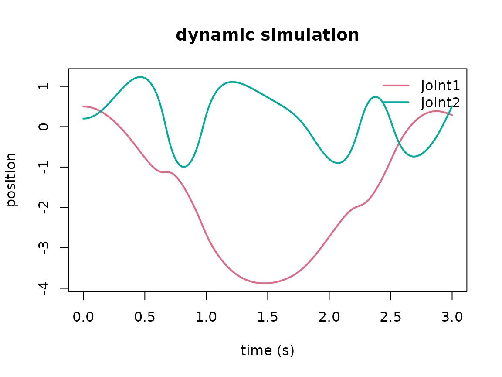
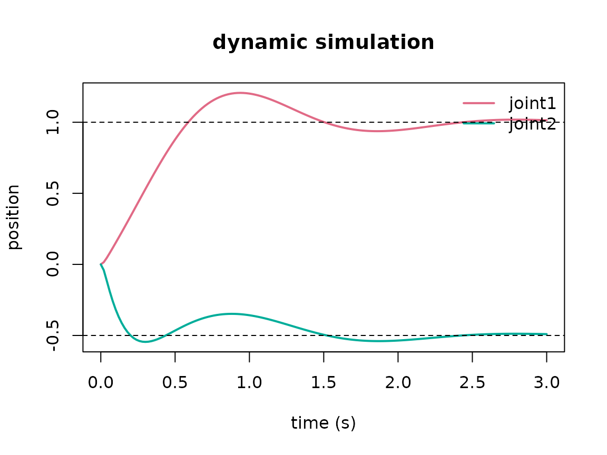

The equations of motion of a rigid multibody system are
M(q)\,\ddot q + C(q, \dot q)\,\dot q + g(q) = \tau + J^\top f_{\text{ext}}.
robotcompR computes every term with the spatial vector algorithms of Featherstone (2008), in the linear-first ordering used throughout the package:
| Function | Algorithm | Cost |
|---|---|---|
robot_inverse_dynamics() |
Recursive Newton-Euler (RNEA) | O(n) |
robot_mass_matrix() |
Composite rigid body (CRBA) | O(n^2) |
robot_forward_dynamics() |
Articulated body (ABA) | O(n) |
robot_gravity_torque(), robot_coriolis(),
robot_bias_forces()
|
RNEA with selected inputs | O(n) |
Gravity is a world-frame vector. It defaults to
c(0, 0, -9.81); the planar examples below move in the xy plane, so they use
c(0, -9.81, 0).
A reference: the two-link arm
For two uniform rods of mass m = 1 and length l = 1 (center of mass at l_c = 0.5, inertia I = m l^2 / 12), the mass matrix is
M(q) = \begin{pmatrix} I_1 + I_2 + m_1 l_c^2 + m_2(l_1^2 + l_c^2 + 2 l_1 l_c \cos q_2) & I_2 + m_2(l_c^2 + l_1 l_c \cos q_2) \\ I_2 + m_2(l_c^2 + l_1 l_c \cos q_2) & I_2 + m_2 l_c^2 \end{pmatrix}.
arm <- robot_example("planar2")
g <- c(0, -9.81, 0)
q <- c(0.3, 0.7)
M <- robot_mass_matrix(arm, q)
M
#> joint1 joint2
#> joint1 2.4315089 0.7157544
#> joint2 0.7157544 0.3333333
c2 <- cos(q[2])
M_ref <- matrix(c(1/12 + 1/12 + 0.25 + (1 + 0.25 + c2), 1/12 + 0.25 + 0.5 * c2,
1/12 + 0.25 + 0.5 * c2, 1/12 + 0.25), 2)
max(abs(M - M_ref))
#> [1] 0The three algorithms are mutually consistent: RNEA with zero velocity and gravity and a unit acceleration returns a column of M, and ABA inverts RNEA.
qd <- c(0.5, -0.4)
qdd <- c(1, 2)
tau <- robot_inverse_dynamics(arm, q, qd, qdd, gravity = g)
tau
#> joint1 joint2
#> 20.648283 4.113131
max(abs(M %*% qdd + robot_bias_forces(arm, q, qd, gravity = g) - tau))
#> [1] 1.776357e-15
max(abs(robot_forward_dynamics(arm, q, qd, tau, gravity = g) - qdd))
#> [1] 6.217249e-15Gravity compensation and energy
robot_gravity_torque(arm, c(0, 0), g)
#> joint1 joint2
#> 19.620 4.905
robot_com(arm, c(0, 0))
#> $mass
#> [1] 2
#>
#> $position
#> [1] 1 0 0
robot_energy(arm, q, qd, gravity = g)
#> kinetic potential total
#> 0.1874544 8.4759950 8.6634494External forces
External wrenches are given per link as world-frame
c(force, torque) vectors acting at the link frame
origin.
lift <- robot_dh(c(0, 0), c(0, 0), c(0, 0), c(0, 0), c("prismatic", "prismatic"),
mass = c(2, 3), com = rbind(c(0, 0, 0), c(0, 0, 0)),
inertia = list(diag(0.01, 3), diag(0.01, 3)))
robot_gravity_torque(lift, c(0.1, 0.2))
#> joint1 joint2
#> 49.05 29.43
robot_inverse_dynamics(lift, c(0.1, 0.2), f_ext = list(link2 = c(0, 0, 3 * 9.81, 0, 0, 0)))
#> joint1 joint2
#> 19.62 0.00Simulation
robot_simulate() integrates \ddot q = \text{ABA}(q, \dot q, \tau) with
‘deSolve’. The torque can be a constant numeric vector or a function
function(t, q, qd), which makes closed-loop control
straightforward.
An unforced pendulum swing conserves energy, which is a direct check of the integrator tolerance and the dynamics:
sim <- robot_simulate(arm, q0 = c(0.5, 0.2), qd0 = c(0, 0),
times = seq(0, 3, by = 0.02), gravity = g)
E <- apply(cbind(sim$q, sim$qd), 1, function(x)
robot_energy(arm, x[1:2], x[3:4], gravity = g)[["total"]])
diff(range(E))
#> [1] 8.932079e-07
plot(sim, "q")
A PD controller with gravity compensation tracks a set point:
goal <- c(1, -0.5)
Kp <- diag(c(40, 20))
Kd <- diag(c(8, 4))
ctrl <- function(t, q, qd) {
as.numeric(Kp %*% (goal - q) - Kd %*% qd) + robot_gravity_torque(arm, q, g)
}
pd <- robot_simulate(arm, q0 = c(0, 0), qd0 = c(0, 0),
times = seq(0, 3, by = 0.02), torque = ctrl, gravity = g)
tail(pd$q, 1)
#> joint1 joint2
#> [151,] 1.014188 -0.4907532
plot(pd, "q")
abline(h = goal, lty = 2)
Larger trees
The algorithms run unchanged on branched trees:
tree <- robot_example("branched")
qt <- c(0.3, -0.5, 0.4, -0.2)
Mt <- robot_mass_matrix(tree, qt)
round(Mt, 4)
#> shoulder elbow finger_left_joint finger_right_joint
#> shoulder 0.1835 0.0141 0.0017 0.0014
#> elbow 0.0141 0.0032 0.0004 0.0004
#> finger_left_joint 0.0017 0.0004 0.0002 0.0000
#> finger_right_joint 0.0014 0.0004 0.0000 0.0002
isSymmetric(Mt)
#> [1] TRUE
min(eigen(Mt)$values) > 0
#> [1] TRUELimitations
- Joint friction, damping, motor inertia and transmissions are not
modeled. URDF
<dynamics>values are kept but ignored, with a warning. - No contact or impact dynamics.
- Forward dynamics fails with a clear error when a joint drives no inertia (for example a massless distal link), since the articulated inertia is then singular.